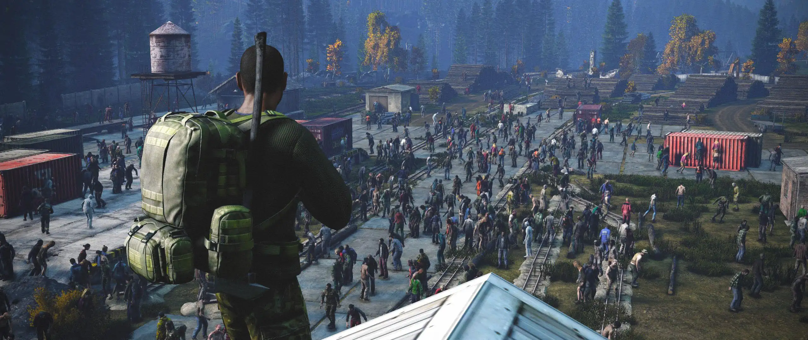
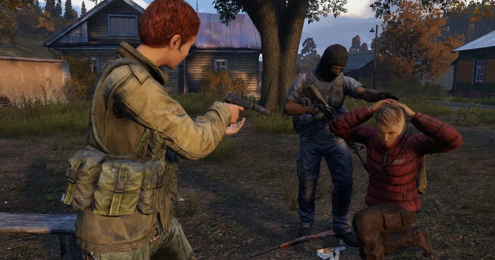
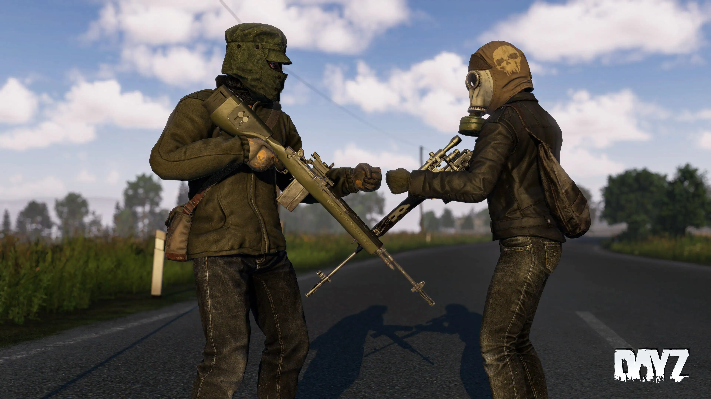

Seasons will be a big factor with flesh line extreme. Certain clothes will
make you too hot for summer and other clothes will make you too cold for winter and spring. As this
server is taking place after the 10 year mark, a lot of the clothes will be badly damaged almost
reduced to rags with no insulation. Fixing them or keeping all of your gear healthy will
be vitale to surviving. Extremely hot summers and even colder winters means that you will have
to plan the entire year for DayZ if you plan on trying to survive the entire year. This is
just another thing that adds to the chaos for any long time DayZ player. Plan th routes you take
and factor in the weather as this and many other things can permanently seperate you from your humble
abode.
Demon DayZ

The amount of infected on this map have been made to simulate a 10 year stagnate apocalypse.
Weapons on the official DayZ are hard to come by and that is no different here. If you want
better weapons and in-game items, you need to go inland. Cities have been heavily populated. Certain
infected have armor and plates available for grabs, but this will come at a price. They are stronger
than the others. Be careful not to damage the items while you try to acquire them. Stirring up
a hornets nest in DayZ is already risky. You might as well make sure that it's worth it.
PVP Rules


PVP in DayZ is the biggest part of the game. On this server, the amount of PVP you decide to do
is completly up to you. Who, what, when, where and why is all you may want to ask yourself.
The entire map is up for grabs. There are absolutley NO safe zones in this world. Whether you want
to meet people and help them or be the villian of the server, that is up to you. This is your story and
you get to tell it how you want.
When does DayZ Badlands come out
Asking how to make a fire in the dayz badlands map is a qeustion I don't think many people
are going to be asking anymore. This standalone Map can make or have deadly tempratures.
The DayZ Badlands map is releasing this year! To prepare for that map, we have made the summer on this map
mimick the Miami,FL area. If you get too hot, change clothes. You can also go into the water for a quick cooldown.